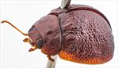
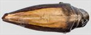
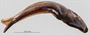
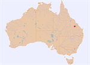

Click on images to enlarge
![Male, Blackdown N.P., central Queensland [QM]](assets/image/Ta242/Ta242_AGM-101_SM.jpg){kind=link}

Male, Blackdown N.P., central Queensland [QM]


Aedeagus, dorsal view (Blackdown Tablelands N.P., Queensland)


Aedeagus, lateral view (Blackdown Tablelands N.P, Queensland)


Distribution
Name
Trachymela sp. Ta242
Reference specimen
GM-101, Blackdown Tableland N.P., central Queensland [QM].
Adult Description
Length: ♂ 5.3 mm (n=1), ♀ 4.6 mm (n=1).
Colouration:
- Head: uniformly mid-brown, labrum fractionally paler, black-tipped mandibles; antennomeres straw-brown, distal segments fractionally darker.
- Pronotum: brown, concolorous with head, mostly uniformly though a small diffuse, slightly darker macula may be present.
- Scutellum: brown, concolorous with or fractionally darker than pronotum, with a slightly darker border.
- Elytra: brown, concolorous with pronotum, almost uniformly so throughout, puncture outlines in a slightly darker shade, verrucae concolorous with interstices or slightly darker; humeral callus concolorous or slightly darker.
- Venter & Legs: venter almost uniformly mid-brown with parts of thoracic ventrites sometimes slightly darker in shade, legs concolorous, inside surface of elytral epipleura brown.
- Cuticular Wax: light brown, approximately uniform in coverage.
Morphology:
- Shape: strongly convex, almost semicircular in lateral view (H/L = 0.5), greatest height viewed laterally a little in front of middle of elytral margin (a little more so in female).
- Head: punctures moderately large (pd ≈ 1.5–2×ef) and relatively evenly and densely distributed. Antennae short, particularly in females (AL/BL: ♂ 41.7%, ♀ 33%), filiform.
- Pronotum: almost evenly curved transversely, foveal depression slight with epidermis slightly elevated in a small pustule behind eyes, discal surface smooth and puncturation clearly impressed (more so in male), evenly distributed and relatively dense (spacing ≈ 2pd), becoming much more coarse at lateral margins. Front margins join lateral margins in a smoothly rounded right-angle, with lateral margin initially straight then curving smoothly and very gradually towards rear margin, broadest between ½–⅓ of distance from rear margin.
- Scutellum: smooth and unpunctured or very sparsely punctured with a few shallow punctures.
- Elytra: punctures mostly distinct and moderately large, deeply set within convex interstices, evenly distributed over anterior two-thirds of surface, surface more granular in posterior third, with much smaller punctures scattered sparsely on the interstices, interstices sometimes form thin transverse ridges, elytral surface very vaguely depressed just anterior to centre, verrucae are small and quite inconspicuous, widely spaced, present primarily in posterior half, with the majority in VR2–VR5, many with a small central puncture, basal section of VR3 may be in form of separated verrucae or a very slightly elevated ridge, surface continuous under humeral callus. Vertical extension of epipleura considerable (HCE/PW = 0.39–0.43).
- Venter: prosternal process narrowing slightly anteriorly, open or lightly closed anteriorly, at most a very sparse scatter of setae present along prosternal process and on mesoventrite, a row of 4–6 long setae (just a single one in female) present on each anterior, median and posterior trochanter; front edge of metaventrite beveled; inner edge of epipleura lacking setae.
Male Genitalia (Aedeagus):
- Dimensions: moderately long (LPE = 31.6% BL), lanceolate.
- Dorsal view: shaft widest at or just anterior to basal sulcus with sides converging uniformly towards apex until about halfway to apex, where the rate of convergence increases noticeably, dorsal surface membranous with a weak dorso-median channel present along its whole length, ostium very small, tip triangular [slightly damaged].
- Lateral view: shaft curved at 120° at about 40% of length from basal extreme, lower edge towards apex from curve very gently curved almost to apex.
Immature Stages
Unknown.
Similar species
- Ta11: rather similar in size and shape but can be separated by Ta11 having a relatively flat quadrate area around elytral summit that is lacking in Ta242 where punctures are less strongly impressed than elsewhere on the elytra.
Notes
- Taxonomy: The male and female assigned to this 'species' were collected at different times, and the male is larger than the female. Structurally, they appear very similar: both are very strongly convex and completely brown, lacking any black markings dorsally or ventrally. The verrucae of both specimens are relatively small and sparse, those of the female just slightly darker than the surrounding surface while those of the male are concolorous with the surrounding surface. However, they differ in a few characters that likely indicate they are not conspecific: the female being about 12% smaller than the male is one factor, though they could be from extreme opposite ends of their size distribution. The male has a row of 4–6 setae on all trochanters, while the female has just one. Finally, the male differs from the female in characters of the pronotum, having the discal punctures more deeply impressed and more regular and having relatively more prominent discal verrucae.
- Host Associations: The female was collected from an unspecified Eucalyptus sp.
Copyright © 2026. All rights reserved.